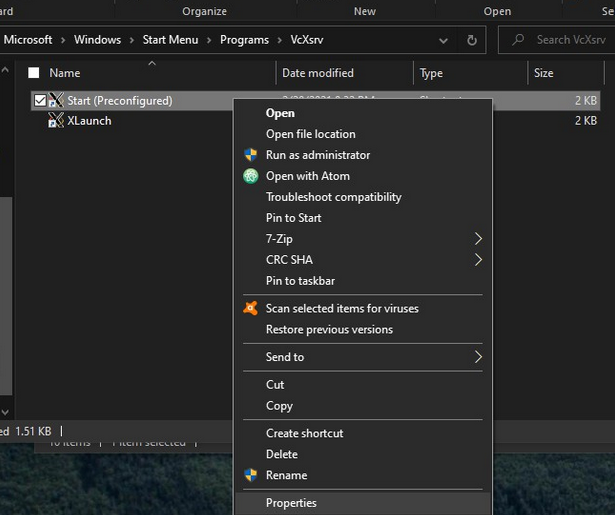
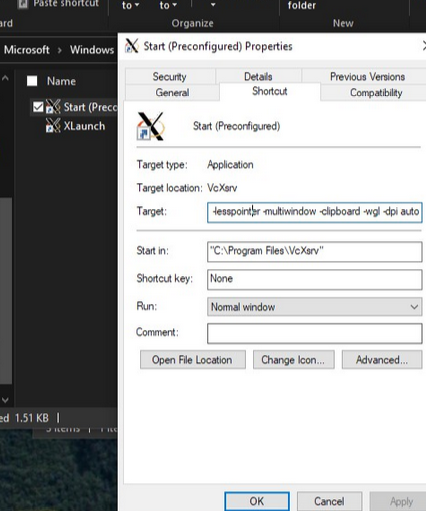

Windows: Windows Subsystem for Linux
Fake Linux!
Windows Subsystem for Linux atau WSL memperbolehkan pengguna Windows untuk menggunakan alat-alat umum Linux pada Windows. Banyak alat-alat kernel development hanya tersedia pada platform Linux, sehingga WSL akan digunakan sebagai lightweight VM untuk pengerjaan tugas ini.
Install WSL2 sesuai instruksi yang terdapat pada https://learn.microsoft.com/en-us/windows/wsl/install. Disarankan untuk memasang distro Ubuntu atau Debian.
Pastikan untuk menginstall WSL2 (bukan WSL1) dan Windows versi terbaru (Windows 10 21H2+ atau 11)
WSL: GUI Application
Boot distro WSL dan pasang xeyes untuk menguji WSL yang diinstall dapat menampilkan GUI
sudo apt install x11-apps # Debian, Ubuntu
sudo dnf install xeyes # Fedora, RHEL
Jalankan command xeyes. Jika WSL berjalan dengan normal akan muncul window baru dengan mata yang mengikuti kursor mouse.
👀 👀 👀
Jika command xeyes berjalan tetapi tidak muncul apapun,
cek ulang versi Windows atau coba untuk memasang X11 server secara manual.
WSL 2 & WSLg
Kecuali memiliki alasan tertentu, Microsoft merekomendasikan untuk memasang WSL2. Berbeda dengan WSL1, WSL2 dapat menjalankan 32-bit ELF executable dan dengan mudah dapat berinteraksi filesystem milik Windows.
WSLg merupakan fitur WSL terbaru yang membuat aplikasi didalam WSL dapat menampilkan GUI. Aplikasi seperti Firefox, QEMU, xeyes membutuhkan WSLg atau X11 Server untuk dapat menampilkan UI. Beruntungnya Windows 10 dan 11 versi terbaru sudah secara default menyediakan WSLg ketika menginstall WSL.
Fallback Solution: Manual X11 Server
-
Pasang X11 Server seperti VcXsrv
-
Cari shortcut XLaunch yang ada pada start menu, contoh:
C:\ProgramData\Microsoft\Windows\Start Menu\Programs\VcXsrv -
Klik kanan & buka “Properties”
-
Tambahkan line berikut pada akhir kolom “Target”:
:0 -ac -terminate -lesspointer -multiwindow -clipboard -wgl -dpi auto -
Buka WSL dan jalankan command berikut:
echo 'export DISPLAY=`grep -oP "(?<=nameserver ).+" /etc/resolv.conf`:0.0'>> ~/.bashrc -
Restart WSL (Command line
wsl --shutdowndan buka ulang) dan jalankan shortcut VcXsrv yang telah diedit -
Coba ulang command
xeyes